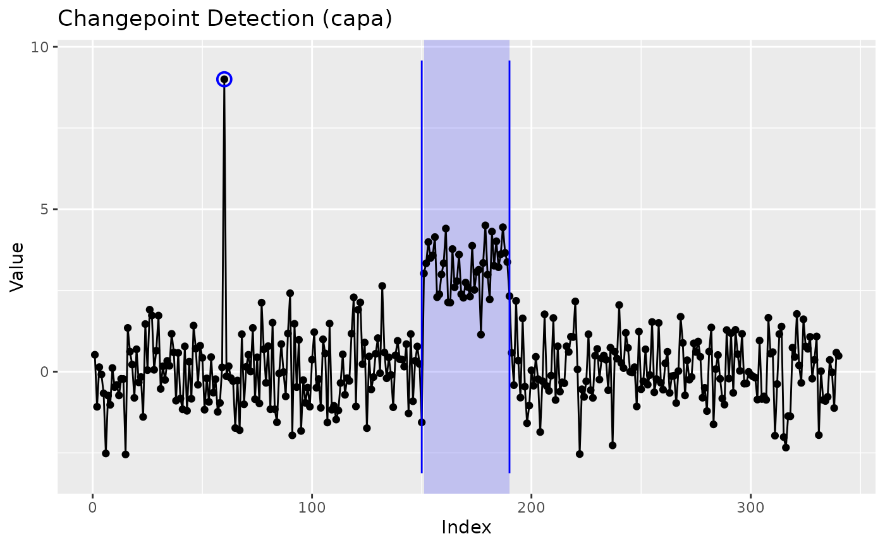

CAPA wrapper: collective and point anomalies (epidemic changepoints)
Source:R/wrap-anomaly.R
capa_wrapper.RdWraps anomaly::capa() (Fisch, Eckley and Fearnhead 2022): finds
stretches of the series that depart from a persistent baseline and
return to it (collective anomalies: an outbreak that subsides, a
fault that is repaired, a campaign that ends) and single outlying
observations (point anomalies), for one series or many. For a
multivariate series it also reports which coordinates each anomaly
affects.
Usage
capa_wrapper(
x,
change_in = c("mean", "meanvar"),
robust = FALSE,
beta = NULL,
beta_tilde = NULL,
min_seg_len = 10,
max_seg_len = Inf,
max_lag = 0,
standardise = TRUE,
...
)Arguments
- x
A numeric vector, or a matrix or data frame with one column per coordinate.
- change_in
"mean"(default) for anomalies in the mean,"meanvar"for anomalies in mean and variance.- robust
For
change_in = "mean"on a single series, use CAPA's robust cost (type = "robustmean"), which tolerates outliers inside an anomalous stretch. Defaults toFALSE.- beta
Penalty for a collective anomaly: one number, or one per coordinate.
NULL(default) uses the engine's own penalty.- beta_tilde
Penalty for a point anomaly.
NULL(default) uses the engine's3 log(np).- min_seg_len
Shortest collective anomaly, at least 2. Defaults to
10, the engine's default.- max_seg_len
Longest collective anomaly. Defaults to
Inf.- max_lag
For a multivariate series, how far an anomaly's start and end may differ between coordinates. Defaults to
0.- standardise
Centre and scale each coordinate by its median and median absolute deviation before the search. Defaults to
TRUE. CAPA assumes a baseline of mean 0 and variance 1, so leave this on unless the data are already on that scale.- ...
Not used; present so the dispatcher can pass its own arguments through. Anything supplied is refused by name.
Value
A ggcpt object whose changepoints are the anomaly
boundaries and whose regions slot lists the anomalies, plus a
baseline element holding the centre and scale used to
standardise each coordinate.
How the result reads
The baseline is everything that is not anomalous, and it is one regime,
which is what separates this model from an ordinary segmentation. Each
collective anomaly from s to e contributes two
changepoints, s - 1 (the last baseline observation before it) and
e (its last observation), so the segments alternate between the
baseline and the anomalies and every tool built on changepoints works
unchanged. The anomalies themselves are in the regions slot,
read with cpt_regions(): one row per anomaly with
start, end, type ("collective" or
"point"), coordinates (the affected coordinates, comma
separated), mean_change (the engine's squared standardised mean
change for a collective anomaly) and strength (the engine's
strength for a point anomaly). Point anomalies are outliers, not
changes, so they add no changepoint. autoplot() shades the
collective anomalies and rings the point ones, and
cpt_attribute() can certify, with error control, which
coordinates changed at each boundary.
A series whose two halves differ, with no baseline to return to, is not what CAPA models: the median of such a series lies between the two levels, so both halves look anomalous. Use an ordinary detector for a step.
References
Fisch ATM, Eckley IA, Fearnhead P (2022). “A linear time method for the detection of collective and point anomalies.” Statistical Analysis and Data Mining, 15(4), 494–508. doi:10.1002/sam.11586 .
Fisch ATM, Eckley IA, Fearnhead P (2022). “Subset multivariate collective and point anomaly detection.” Journal of Computational and Graphical Statistics, 31(2), 574–585. doi:10.1080/10618600.2021.1987257 .
See also
cpt_regions(), cpt_attribute().
Other changepoint engines:
bcp_wrapper(),
beast_wrapper(),
bfast_wrapper(),
binsegrcpp_wrapper(),
bocpd_wrapper(),
cpm_wrapper(),
cpop_wrapper(),
cpt_wrapper(),
decafs_wrapper(),
ecp_wrapper(),
envcpt_wrapper(),
esac_wrapper(),
fabisearch_wrapper(),
fastcpd_wrapper(),
fcov_wrapper(),
fmean_wrapper(),
fpop_wrapper(),
geomcp_wrapper(),
hdcov_wrapper(),
hdreg_wrapper(),
idetect_wrapper(),
inspect_wrapper(),
kcp_wrapper(),
kwc_wrapper(),
mcp_wrapper(),
mosum_wrapper(),
network_wrapper(),
not_wrapper(),
npmojo_wrapper(),
nsp_wrapper(),
ocd_wrapper(),
pilliat_wrapper(),
segmented_wrapper(),
smuce_wrapper(),
sn_wrapper(),
strucchange_wrapper(),
taylor_wrapper(),
tguh_wrapper(),
trend_wrapper(),
var_wrapper(),
wbs2_wrapper(),
wbs_wrapper(),
wbsts_wrapper()
Examples
set.seed(2026)
x <- c(rnorm(150), rnorm(40, 3), rnorm(150))
x[60] <- 9
fit <- capa_wrapper(x)
cpt_regions(fit)
#> # A tibble: 2 × 7
#> start end length type coordinates mean_change strength
#> <int> <int> <int> <chr> <chr> <dbl> <dbl>
#> 1 60 60 1 point V1 NA 7.39
#> 2 151 190 40 collective V1 6.16 NA
ggplot2::autoplot(fit)
